Grace2
总在即兴环节率先登台、自信从容的北航头马常客
干部活跃 2015–2017出现 20 次 · 20 篇
这位 Grace 是北航 Toastmasters 俱乐部的活跃会员，也是俱乐部里两位同名 Grace 中较晚的一位（据俱乐部资料，她曾在 2015 年秋季担任秘书职务）。在经人脸识别确认她到场的几次会议记录中，她的身影主要出现在即兴演讲（Table Topic）环节，被会议小编形容为"漂亮自信大方""confident and graceful"。
从现存的会议纪要看，她是即兴环节里相当踊跃的一员。无论是回望过去、畅想财富，还是谈论吸引自己的人，她都能从容地走上讲台分享真实的想法——比如最想回到高一那段任性的年纪、若得百万奖金愿拿去帮助穷人、欣赏一个不算英俊却爱读书的男生。会议记录里多次提到她"总是第一个上台"，可见她在即兴表达上的主动与勇气。
由于现有文章只记录了她在即兴环节的表现，没有留下她的备稿演讲或会议功能角色的具体记录，因此这份档案聚焦于她作为即兴演讲者的真实片段。
里程碑
- 2016-06-19 第142次会议即兴登台 ↗在以Compromise为主题、officers换届的会议上参与即兴环节，被小编称为'漂亮自信大方的Grace'。
- 2017-03-28 第168次会议即兴分享'时光机' ↗走上讲台讲述若能回到过去最想回到高一，因当时对奶奶和家人爱发小脾气而后悔，长大后体会到亲情真谛。
- 2017-04-08 第169次会议即兴分享'财富与善意' ↗在Plan Your Life主题会议上表示若有五百万奖金，会用来帮助穷人并投资生财。
- 2017-04-23 第171次会议率先即兴登台 ↗在Love主题会议上'总是第一个上台'，自信从容地分享自己被一位虽不英俊但爱读书的男生所吸引。
担任过的职务 · 俱乐部官员
秘书 Secretary2015秋 · 2015.07–2015.12
担任过的会议角色
即兴演讲者(Table Topic Speaker)×4
为俱乐部做的事
- 在多次例会的即兴演讲(Table Topic)环节积极参与、踊跃发言，并常常第一个上台，为会议带动气氛。
- 据俱乐部资料，曾于2015年秋季担任俱乐部秘书职务（该职务未见于本批会议纪要正文）。
照片墙 · 时间线
共 30 帧，其中 21 帧已用人脸识别确认是本人（带 ✓）。
 ✓
✓ ✓
✓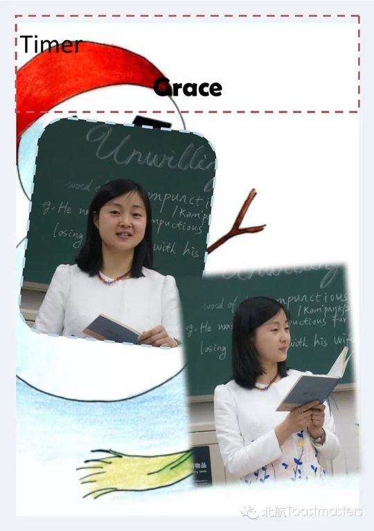
✓ ✓
✓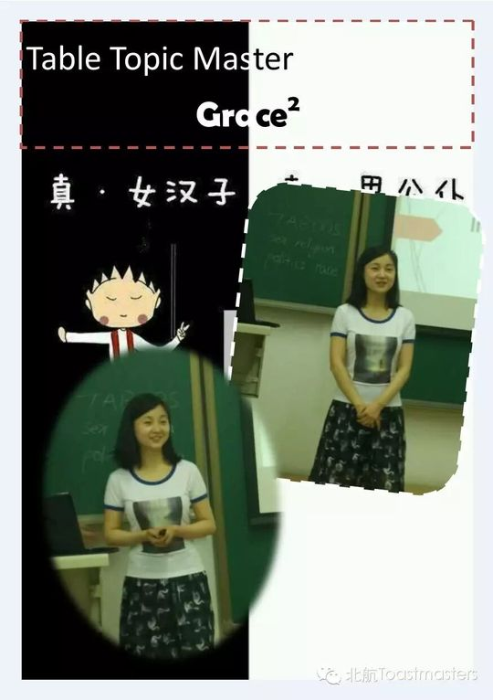
✓ ✓
✓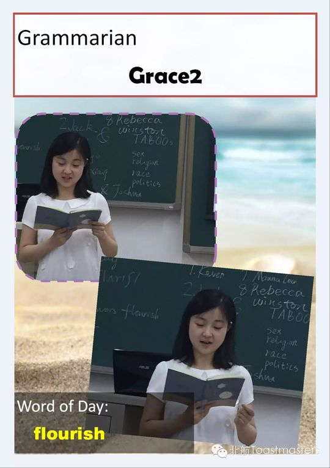
✓ ✓
✓ ✓
✓ ✓
✓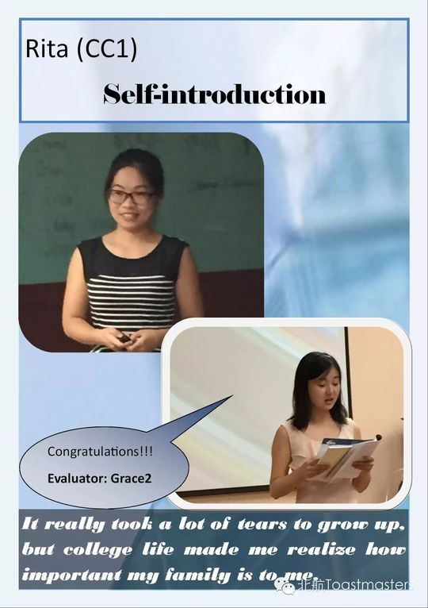
✓ ✓
✓ ✓
✓ ✓
✓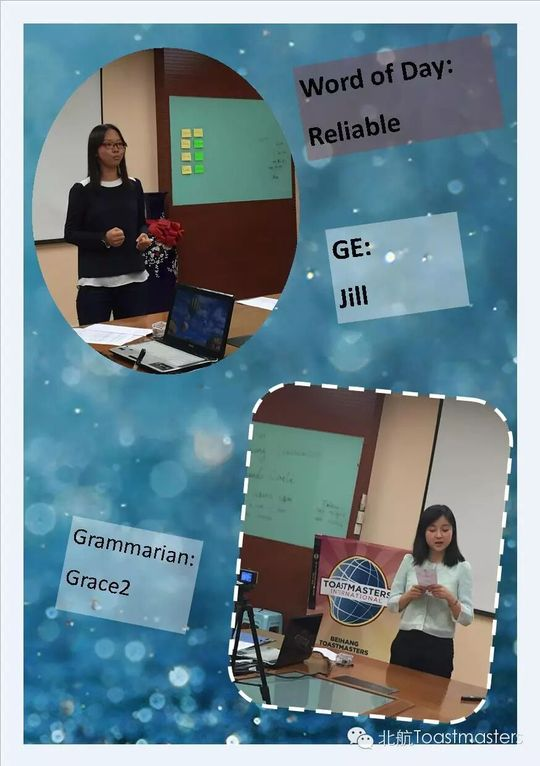
✓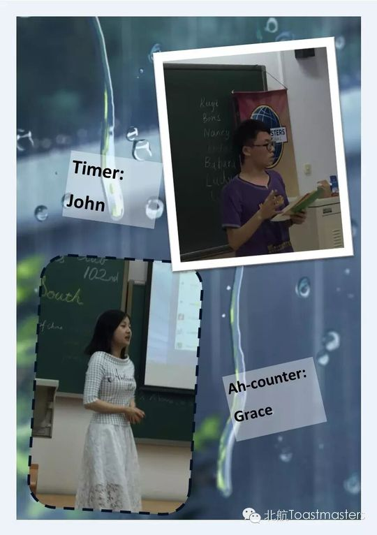
✓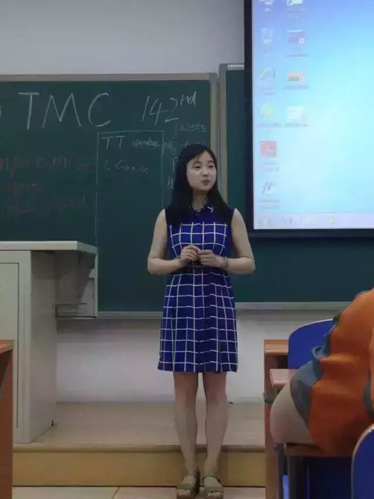
✓ ✓
✓ ✓
✓ ✓
✓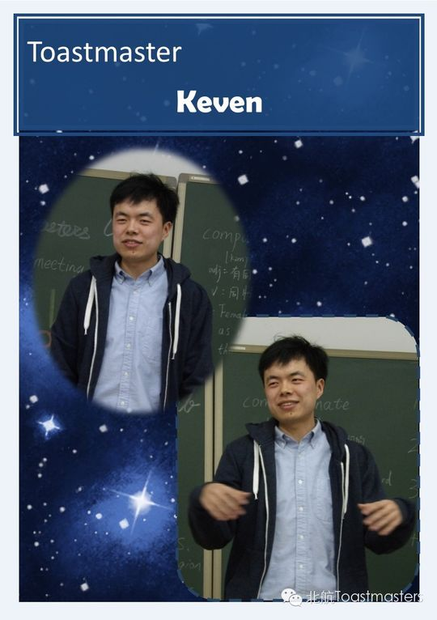

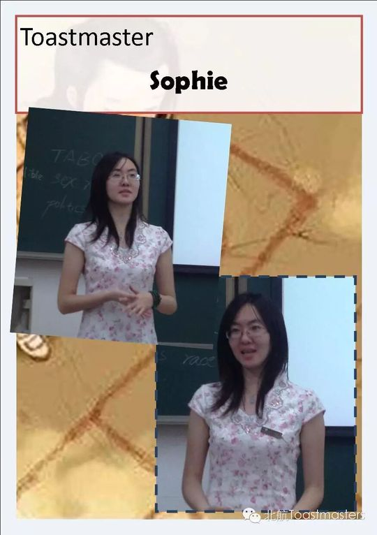


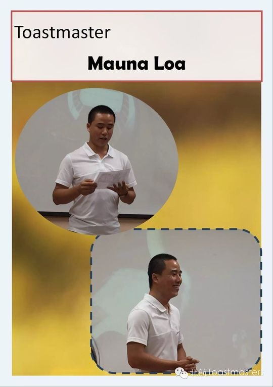
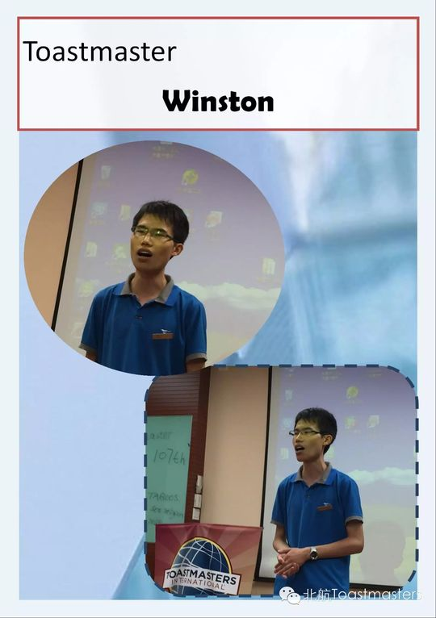
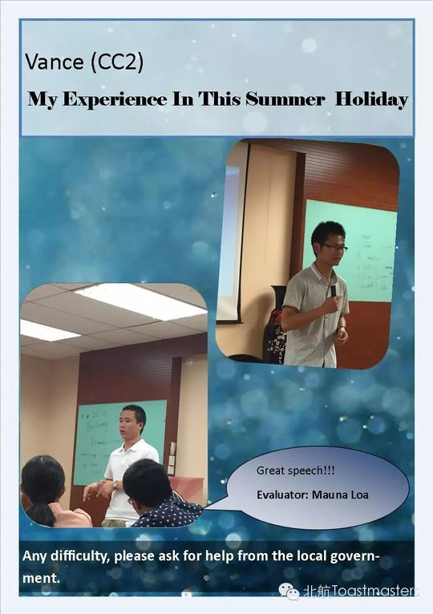

完整足迹 · 20 次出现（点开，每条可跳转原文）
- 2015-03-25第88次 · Mars vs. Venus @BeihangTMC 88th Meeting
- 2015-04-08第90次 · Graduation @BeihangTMC 90th Meeting Minu
- 2015-05-14第93次 · A Sense of Control@BeihangTMC 93rd Meeti
- 2015-06-17第100次 · 100th Meeting Minutes of BeihangTMC
- 2015-06-25第99次 · 99th Meeting Minutes of BeihangTMC
- 2015-06-26第99次 · 99th Meeting Minutes of BeihangTMC
- 2015-07-01第101次 · Interpersonal Closeness @BeihangTMC 101s
- 2015-07-06第102次 · North & South @BeihangTMC 102nd Meeting
- 2015-07-14第103次 · 103rd meeting minutes of BeihangTMC
- 2015-07-20第104次 · 104th meeting minutes of BeihangTMC
- 2015-07-28第105次 · 105th meeting minutes of BeihangTMC
- 2015-08-19第106次 · 106th meeting minutes of BeihangTMC
- 2015-08-24第107次 · 107th meeting minutes of Beihang TMC
- 2015-09-04第108次 · 108th meeting minutes of Beihang TMC
- 2015-09-16第110次 · 110th meeting minutes of Beihang TMC
- 2015-09-23第111次 · 111st meeting minutes of BeihangTMC
- 2016-06-20第142次 · Compromise@minutes of BeihangTMC 142nd M
- 2017-03-28第168次 · 时光机@BeiHang ToastMaster 168 Meeting Minu
- 2017-04-08第169次 · Plan Your Life@BeiHang-TMC-169th Meeting
- 2017-04-23Love@BeiHangTMC-171th-Meeting Minutes